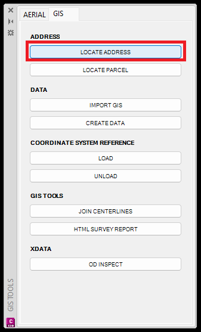
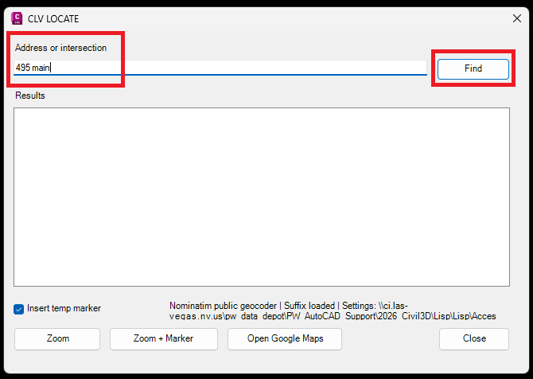
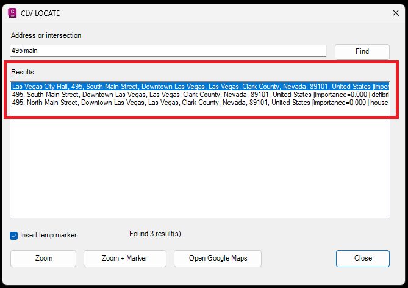
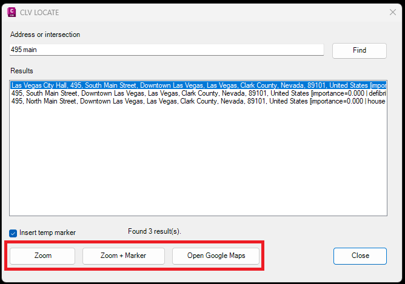
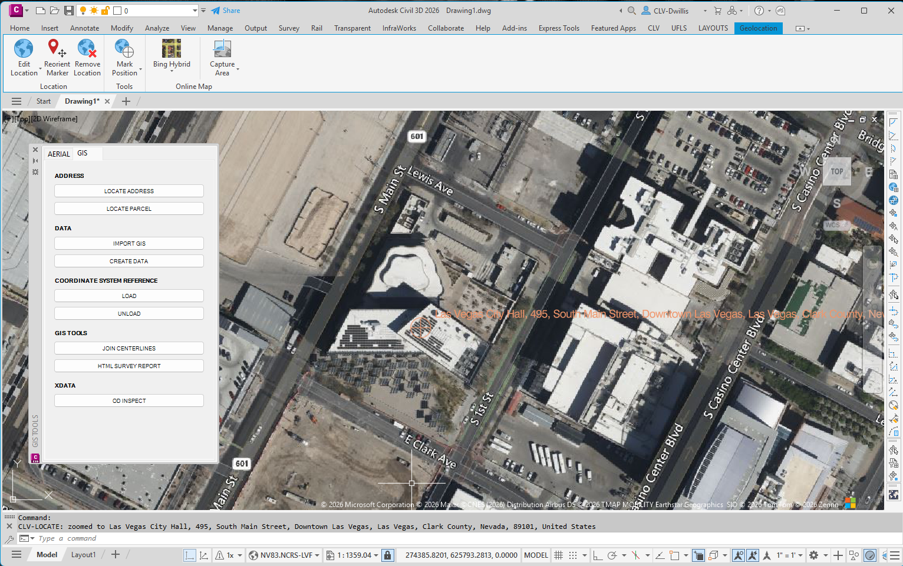

LOCATE ADDRESS
Searches for an address or intersection, lets the user choose from matching results, zooms to the selected location, and can place a temporary marker for location review.
Result: The drawing zooms to the selected address or intersection location with the map background available for visual confirmation.
Basic Use
- Open the GIS tab and select LOCATE ADDRESS.
- Enter the address or intersection and click Find.
- Review the returned results and select the correct location.
- Choose Zoom, Zoom + Marker, or Open Google Maps.
- Review the zoomed location in the drawing.





Notes
- Use a partial address when the full address is not known. Review all results before zooming.
- Leave Insert temp marker checked when you want a temporary drawing marker placed at the located point.
- If several similar results are returned, use Open Google Maps to confirm the intended location before closing the dialog.